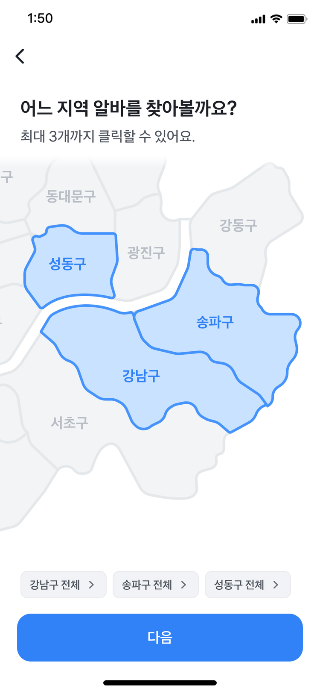
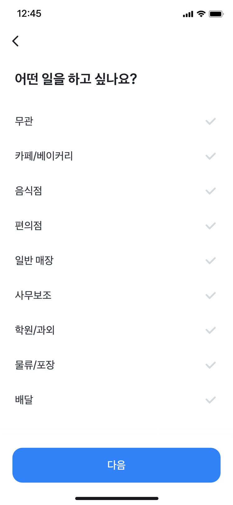
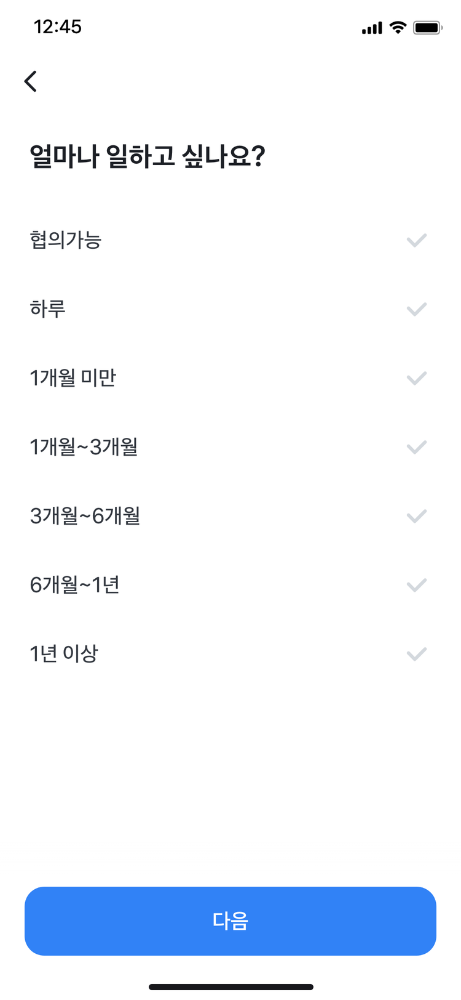
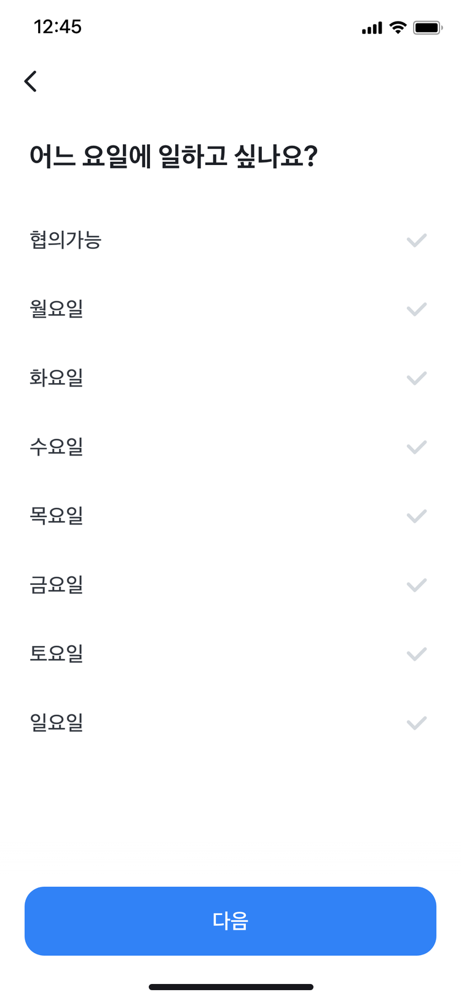
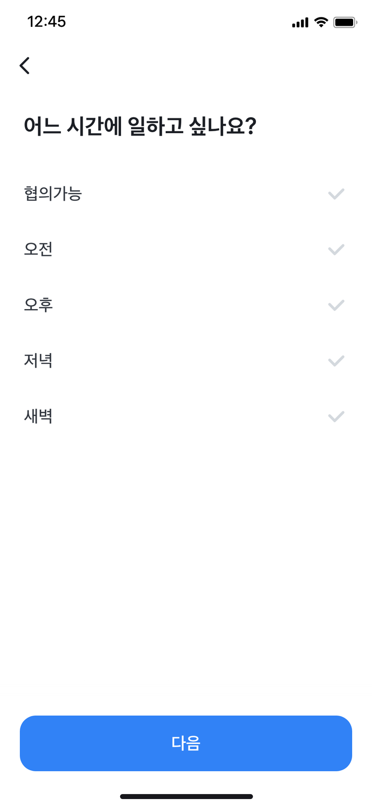
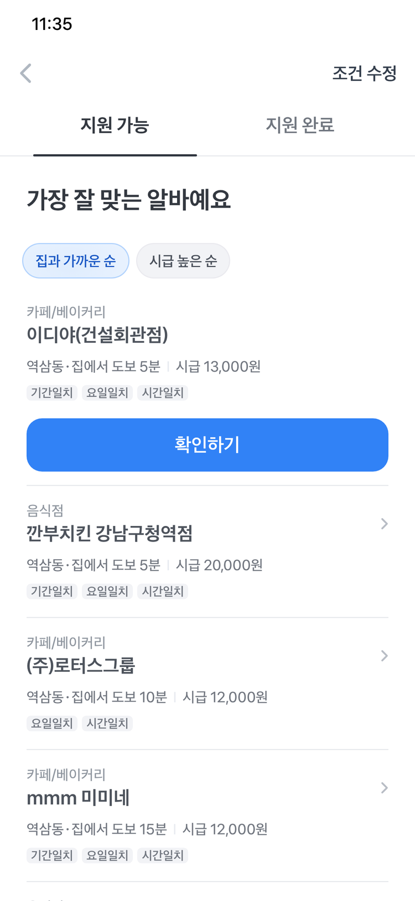
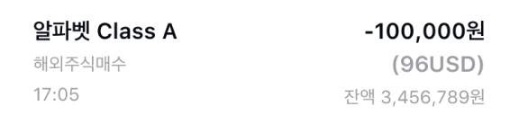
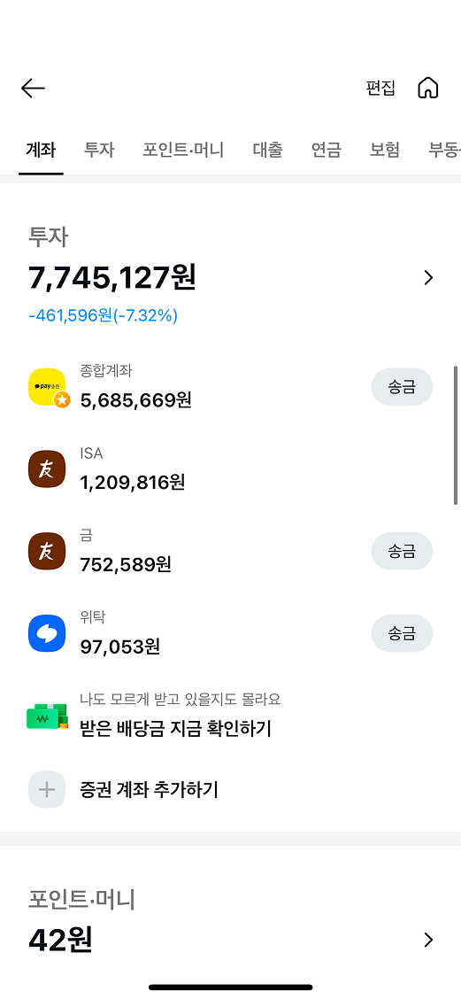

Portfolio
Name
Hyunseo Park
E-mail
hyunseo6660@naver.com
Phone
010-7550-8760
토스알바
근무지 퍼널 실험
유저 데이터를 세그먼트별로 분석해 전환율을 139% 개선했어요.
기여도기획 및 디자인 100%
Background
토스알바는 개인사업자 시장으로 진출하려는
흐름 속에서 소상공인의 핵심 니즈인
알바 구인을 겨냥하며 시작됐어요
소상공인에게 좋은 인재를 추천해주기 위해서는
충분한 구직자 풀을 확보하는게 중요했어요
구직자를 모으기 위해 구직자가 알바를
찾을 때 겪는 어려움부터 풀기로 했어요
| 1세대 구직 플랫폼 |
토스알바 |
광고 기반 잡보드광고성 공고가 너무 많다 30%
추천이 내 상황과 맞지 않는다 30%
이미 마감된 공고가 많다 24%
중복으로 올라오는 공고가 많다 17% |
알바 매칭 서비스광고 없이 내게 맞는 알바를 1분만에 찾는다 |
알바 매칭 서비스?
원하는 알바 조건을 선택하면
광고 없이 내게 맞는 알바를 찾을 수 있어요
Problem
첫 단계인 근무지 선택에서
48%가 이탈하고 있었어요
이 문제를 풀어 전환율을
139% 올린 과정을 소개할게요
AS-IS

→
User Study
UT 결과, 유저들은 동의 화면 다음에
업종 선택이 나올 거라 예상했어요
예상과 다른 화면이 나와
당황해서 나가는 걸까?
Hypothesis
업종 선택을 먼저 보여주고 근무지 선택을 뒤로 빼면
조건 선택 완료율이 오를 것이다
유저들이 기대하는 화면을 먼저 보여주고 과업 난이도가 높은 근무지 선택을 뒤로 뺐어요.
Result
조건 선택 완료율이
CON 대비 5.3% 떨어졌어요
첫 화면 전환율은 올랐지만, 수치가 높았던 업종 선택 완료율이 떨어져(94%→82%) 전체 전환율도 떨어졌어요.
| 실험안 |
1단계 |
2단계 |
5단계 |
조건 선택 완료율 |
| CON |
근무지52.1% |
업직종94.0% |
~~ |
43.0% |
| VAR |
업직종82.4% |
~~ |
근무지56.6% |
40.7% (-5.3%) |
화면 순서를 바꿔도
근무지 선택 화면의 전환율은
50%대로 여전히 낮았어요
데이터를 쪼개 보니
유저의 상황에 따라 전환율이 달랐어요
| 세그먼트 |
근무지 선택 완료율 |
| 집주소O 서울시O (비중 약 40%) |
87.7% |
| 집주소O 서울시X (비중 약 30%) |
23.3% |
| 집주소X (비중 약 30%) |
49.1% |
집주소O 서울시O 케이스
집주소가 있는 유저들은 근무지 선택 화면에서
추가 액션을 거의 하지 않았어요
→
희망 지역 추가 클릭률
약 12%
→
다음 클릭률
약 88%
집주소O 서울시O 케이스
근무지 선택 화면을 없애면
조건 선택 완료율이 오를 것이다
쓰이지 않는 화면을 아예 없애보기로 했어요.
VAR근무지 선택 화면을 없애는 대신, 마지막 확인 화면에서 희망 근무지를 추가할 수 있다는 걸 안내했어요.
Result
조건 선택 완료율이 CON 대비 6% 떨어지고
첫 화면 전환율은 13%나 떨어졌어요
근무지가 첫 화면일 때는 다음 버튼만 누르면 됐는데, 업종이 첫 화면일 때는 선택지가 늘어나 인지 부하가 커졌어요.
| 실험안 |
1단계 |
2단계 |
조건 선택 완료율 |
| CON |
근무지88.9% |
업직종87.5% |
61.8% |
| VAR |
업직종77.0% |
~~ |
58.0% (-6.1%) |
해피케이스 대신
이탈이 많이 일어나는
유저에게 집중해보기로 했어요
집주소O 서울시X / 집주소X 케이스
이 유저들은 근무지 선택 화면에서
어떤걸 해야할지 몰라 그냥 나가버렸어요
집주소O 서울시X

이탈률 약 87%
●
빨간색 경고 문구를 보고 그냥 나가버려요.
●
어떤 버튼을 눌러야 하는지 망설여요.
집주소X

이탈률 약 51%
●
집주소를 추가해도 서울시가 아니면 경고 문구를 보게 돼요.
●
집주소 추가에서 이미 피로감을 느낀 유저들은 나가버려요.
●
어떤 버튼을 눌러야 하는지 망설여요.
집주소O 서울시X / 집주소X 케이스
유저가 쉽게 할 수 있는 하나의 액션만 보여준다면
조건 선택 완료율이 오를 것이다
VAR1집주소O 서울시X / 집주소X 유저 모두 구 선택 화면으로 바로 보냈어요.
VAR2근무지를 지도로 보여주어 인지 부담을 줄이고, 구만 선택해도 바로 다음으로 넘어갈 수 있도록 했어요.
*데이터 분석 결과, 특정 동을 선택하는 것보다 'OO구 전체'를 선택하는 유저들이 많았어요.
VAR2 조건 선택 완료율
+139%
| 측정 구간 |
CON |
VAR1 |
VAR2 |
| 근무지 선택 완료율 |
12.8% |
26.8% (+109.3%) |
35.7% (+179.4%) |
| 근무지 선택 완료 to 조건 선택 완료 |
90.2% |
83.6% (-7.2%) |
77.1% (-14.5%) |
| 조건 선택 완료율 |
11.5% |
22.4% (+94.1%) |
27.6% (+139.0%) |
Result
딱 하나의 선택지만 주자
유저는 망설임 없이 다음 액션을 이어갔어요
Lessons learned
전체 지표만 보지 말고
누가 문제를 겪는지
디테일하게 쪼개 보는게 중요해요
이탈하는 유저가 누구인지 데이터 쪼개보기
토스알바
공고 추천 실험
0to1 제품의 핵심 가치를 유저에게 전달한 과정을 소개할게요.
기여도기획 및 디자인 100%
Background
토스알바에서는 원하는 알바 조건을 선택하면
잘 맞는 공고를 찾아줘요
핵심 지표인 지원 완료율을
53.4% 올린 과정을 소개할게요
Problem
원하는 조건의 알바를 보여주었지만,
44%는 공고를 클릭하지 않고 나가버렸어요
Problem
5가지 조건을 모두 선택하고 들어올 만큼
구직 의향이 있는 유저가 왜 공고를 보지 않고 나갈까?
결과 화면 전 선택해야 하는 항목





Hypothesis
조건과 맞지 않는 공고가 나와서
클릭해보지 않을 것이다
공고의 양이 부족해서
5가지 조건 중 3가지만 맞아도
추천하는 구조였거든요
| 요소 |
가중치 |
설명 |
| 거리 적합도 |
40% |
집주소/희망근무지와 매장 간 거리 |
| 경력 적합도 |
10% |
관련 업종 경력 보유 및 기간 |
| 업종 일치도 |
25% |
희망업직종과 공고업직종 매칭 |
| 근무조건 적합도 |
25% |
기간/요일/시간 매칭 |
| 총점 |
100% |
최종 100점 만점 |
User Study
예상한대로 유저들은 선택한 조건과
다른 알바가 나오는 것에 의문을 가졌어요
"카페 알바를 원했는데 음식점이 나와요"
"주말 알바를 원했는데 평일 알바가 나와요"
설문조사에서도 미지원에 대한 이유를 '원하는 공고가 없어서'로 뽑았어요.
15%
사진, 위치 등 매장 정보가 충분하지 않아서
100% 맞는 알바만 추천해주면 좋겠지만,
현실적으로 어려운 상황이었어요
알바몬에서만 공고를 받아오고 있어서
공고의 양을 늘리는 데 한계가 있었어요
Solution
공고의 양을 늘릴 수는 없으니
원하는 조건의 알바를 잘 찾을 수 있게 했어요
실패
가중치 변경 실험
업종의 가중치를 늘려 업종이 맞는 알바를 잘 보여주면 공고 클릭률이 오를 것이다.
(UT에서 유저들이 업종을 가장 많이 언급했어요)
CON
● 업종 25%
● 거리 40%
● 경력 10%
● 기간/요일/시간 25%
VAR +1.6%
● 업종 40%
● 거리 30%
● 경력 10%
● 기간/요일/시간 20%
효과 미미
필터&리스트UI 실험
V1: 필터로 좋은 조건의 공고를 쉽게 비교하게 만들면 공고 클릭률이 오를 것이다.
V2: 업종과 매장명을 강조한다면 공고 클릭률이 오를 것이다.
V2 +3.6% (유의미)

실패
Secondary 공고 필터 실험
내가 고른 조건만 모아볼 수 있는 필터를 추가하면 공고 클릭률이 오를 것이다.
CON

VAR +0.6%

Result
유저들마다 원하는 조건이 다르기 때문에
모두가 만족하는 뷰를 만들기에는 한계가 있었어요
User Study
데이터를 분석해보니 토스알바의 유저들은
탐색형이 아니라 즉시 지원형이었어요
단기 알바 지원 비중이 높고, 타사처럼 필터형 탐색 UI가 없었기 때문으로 추정돼요.
빠르게 결정하는 유저들에게는
고민을 줄여주는 게 중요했어요
어떻게 하면 유저들이
고민 없이 지원하게 하지?
Background
공고 상세에서 지원 완료율을
올리는 실험을 한 적이 있는데요
Problem
"가장 잘 맞는 공고라고 했으면서
왜 불일치가 있어요?"

조건 불일치가 강조되는 문제를 해결하기 위해
여러 가설을 세웠어요
일치 / 불일치 문구가 꼭 있어야 할까?
추천의 이유를 전달하는 커뮤니케이션 방식이자
이전 화면과의 맥락을 이어주는 도구였어요
불일치를 숨겨버릴까?
불일치를 숨기면 유저는 필요한 정보를 못 봐요
탐색 사용성을 해치는 방법이었어요
시안
.png)
Solution
불일치 항목을 보여주되
일치 항목을 강조했어요
V1: 아이콘과 문구로 일치를 강조한다면 지원 완료율이 오를 것이다.
V2: 업종과 거리의 위계를 재설정해 일치 개수가 많아 보이게 한다면 지원 완료율이 오를 것이다.
CON
V1

V2
V2 지원 완료율
+32.7%
| 측정 구간 |
CON |
V1 |
V2 |
| 공고 상세→지원 완료 |
5.7% |
6.5% (+14.4%) |
7.5% (+32.7%) |
Result
이 알바가 나와 왜 잘 맞는지 이유가 명확할수록
유저들은 더 많이 지원했어요
결과 화면에서도 일치 항목을 강조하면
확신을 줄 수 있지 않을까?
'이게 나한테 맞는 공고구나!'라는
생각이 저절로 들게요
Solution
일치하는 항목을 강조하고
가장 잘 맞는 공고 하나만 남겼어요
V1: 일치 항목을 강조하면 공고 클릭률이 오를 것이다.
V2: 공고 하나만 강조하면 공고 클릭률이 오를 것이다.
CON
V1

V2
V2 지원 완료율
+53.4%
| 측정 구간 |
CON |
V1 |
V2 |
| 결과 화면→지원 완료 |
2.4% |
3.0% (+31.2%) |
3.6% (+53.4%) |
| 결과 화면→공고 상세 |
47.3% |
47.2% (-0.07%) |
41.1% (-13.2%) |
| 공고 상세→지원 클릭 |
8.8% |
10.3% (+17%) |
13.4% (+52%) |
Result
유저들은 더 적은 공고를 봤지만,
훨씬 높은 확신을 가지고 지원했어요
처음에 목표했던 공고 클릭률은 떨어졌지만, 지원 완료율은 크게 올랐어요.
추천의 근거를 명확히 할수록, 하나의 공고를 강조할수록 공고 상세에서 지원 의향을 높였어요.
공고 클릭률 -13.2%
지원 클릭률 +52.0%
Lessons learned
표면적인 접근에서 벗어나
유저들이 어떤 특성을 가지고 있는지 고민하자
성공 지표를 만들 수 있었어요
어떻게 하면 조건에 맞는 공고를 잘 찾게 할까?
↓
"토스알바의 유저들은 탐색형보다 즉시 지원형에 가깝다"
↓
어떻게 하면 고민 없이 지원하게 할까?
카카오페이
증권계좌 개선
관성적으로 설계된 증권계좌의 화면을 니즈에 맞게 개선했어요.
기여도기획 및 디자인 100%
Background
카카오페이의 계좌 상세페이지는
진입 경로에 따라 다른 형태로 관리되고 있었어요
자산홈에서 진입

지출입 내역에서 진입

Background
관리 효율성을 높이기 위해 계좌 상세를
하나의 뷰로 통합하기로 했어요
Problem
유저들은 증권 계좌에서
몇가지 불편함을 겪었어요
"잔액이 왜 이렇게 적어요?"
"오늘 매매했는데 내역에 안 떠요"
Problem
타사에 비해 제공하는 정보가
부족하다는 문제도 있었어요
| 서비스 |
계좌 상세에서 제공하는 정보 |
| 카카오페이 |
지출입 내역 |
| T사 |
지출입 내역, 투자 현황 |
| N사 |
지출입 내역, 투자 현황 |
| M사 |
지출입 내역, 투자 현황 |
특히, 타사는 모두 투자 현황을 보여주고 있었는데
카카오페이에서만 투자 현황을 볼 수 없었어요
유저들은 정말 계좌 상세에서
투자 현황을 보고싶어 할까?
그냥 증권사 앱에서 보는게 더 편하지 않을까?
User Study
타사의 마이데이터를 이용하는 유저들은
투자 현황을 보러 증권 계좌에 들어갔어요
쓰고있는 증권사 앱이 불편해, 쓰기 쉽고 접근성이 높은 앱에서 투자 현황을 보고 있었어요.
72%
평가금, 수익률 등 내 투자 현황을 보러
Goal
해결해야 할 문제는
2가지로 좁혀졌어요
Solution 1
잔액이 예수금으로 되어있어
실제 자산보다 적어 보이는 문제가 있었어요
잔액을 예수금+평가금으로 바꾸고
잔액 밑에 예수금을 따로 보여줬어요
Solution 2
매매 내역이 매수/매도로만 표시되어
원하는 내역을 찾기 어려웠어요
매수/매도의 정확한 상품명을 보여줬어요
AS-IS
 TO-BE
TO-BE

Solution 3
지출입 내역 중심의 UI로
투자 현황을 볼 수 없었어요
투자 현황을 어떻게 보여줄지 고민했어요
시안1: 투자 현황을 강조하고 지출입 내역의 접근성을 낮춘 안
시안2: 지출입 내역이 첫 화면에서 보이도록 유지하고, 투자 현황을 바텀시트에서 보여주는 안
유저들이 궁금해하는 정보인
투자 현황을 더 잘 보이게 만들었어요
시안2에서는 상단 영역이 길어 중요한 내용이 ATF 영역을 벗어나는 문제도 있었어요.
하지만 시안1을 개발하는 것에 어려움이 있었어요
"투자현황은 일부 유저만 원하는 정보 아닐까요?"
최소한의 스펙으로 투자 현황을
보여주는 방법은 없을까?
Solution 3
'내 투자' 서비스로 이동하는 버튼을 추가했어요
내 투자 서비스에서는 나의 모든 투자 종목을 볼 수 있어요.
이동 버튼을 추가해 유저들이 정말 투자 정보를 궁금해하는지 지켜보기로 했어요.
Result
유저는 정말 투자 정보를 궁금해했을까요?
클릭 요소 중 '투자중' 버튼의 클릭률이 가장 높았고,
버튼 이동 후 투자 정보를 추가 탐색하는 유저가 많았어요
랜딩 후 클릭 1건 이상 발생 비율
약 76%
Impact
잔액과 내역만 보고 끊기던 경험을,
내 투자 서비스를 탐색하는 것까지 이어지게 했어요
TO-BE

→
→

Lessons learned
1
유저의 숨겨진 니즈를 파보니
개선 방향을 잡을 수 있었어요
설문조사를 통해 계좌 상세 화면에서 투자 현황을 보고싶어 하는 니즈를 발견했어요.
2
처음엔 큰 그림부터 그렸지만,
필요한 건 단계적인 개선이었어요
'유저들은 계좌 상세에서 투자 현황을 보고싶어 한다'라는
가설을 검증하기 위해 버튼 하나를 추가했어요.